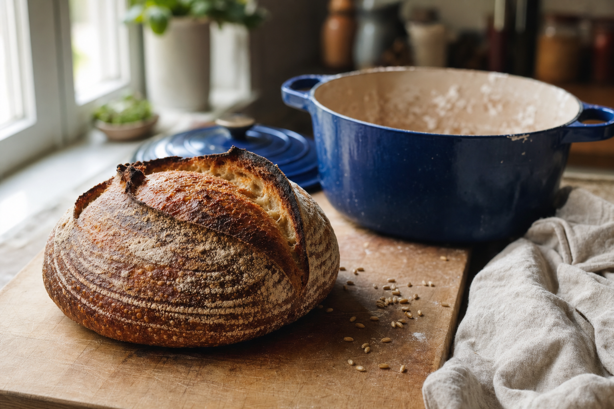
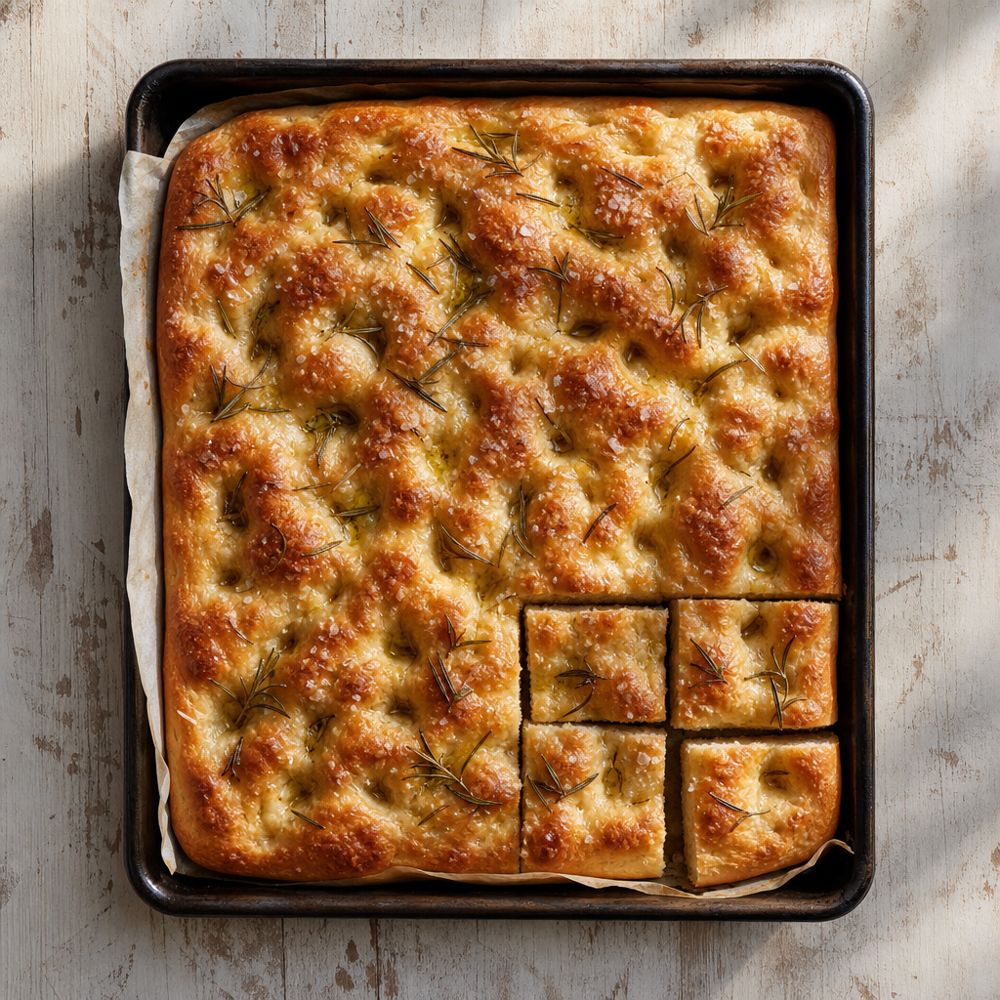
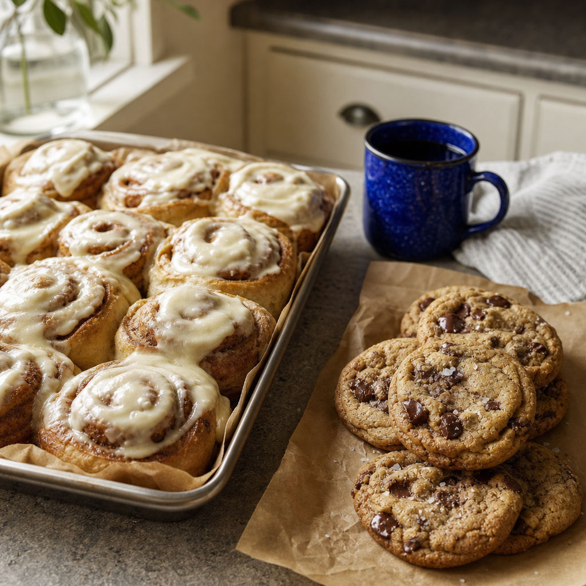
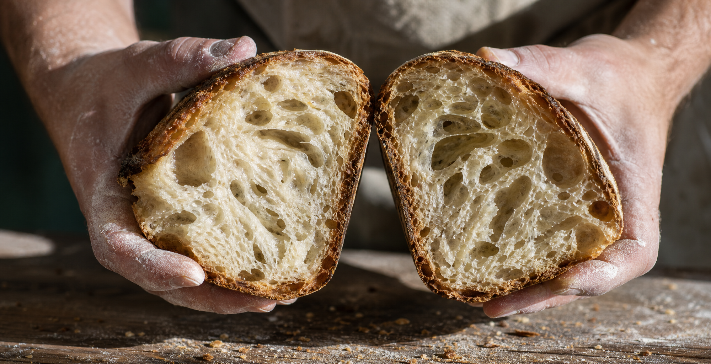

Sourdough baked in Bristow, picked up from the shed.
Order ahead. Collect Saturday or Sunday at the Bread Shed on Aster Road, still warm from the morning bake.

The bakes
The basic menu stays the same, with seasonal specials on top. Each week's list and prices are on the order page, and the extras at the shed go first come, first served.
Loaves
- The Amelia Original SourdoughThe original. Naturally leavened, 100% organic flour.
- Classy Pan LoafSourdough in a pan, made for sandwiches and toast.
- Jalapeño & Cheddar SourdoughCheddar and jalapeño folded through the dough.
From the oven
- FocacciaDimpled, olive-oiled, cut to share.
- Pizza doughFermented like the loaves, ready to stretch at home.
- Cinnamon rollsWeekend rolls on a sourdough base.
Sweet
- Sourdough Banana Bread LoafA slight variation on the old classic.
- Cinnamon Streusel Coffee CakeStreusel on top, sourdough underneath.
- Brown Butter Chocolate Chip CookiesBrowned butter, big chips, baked the day you collect.
- BrowniesFudgy, cut into squares.



Twenty hours on a wild culture, then the Dutch oven.
Minimum fermentation on a wild-yeast sourdough culture. No commercial yeast, no conditioners, no preservatives.
From feeding the starter to the loaf in your hands, which is why bread is ordered ahead and baked the morning of pickup.
Every classic loaf. Each product is labelled with its organic ingredients, so you know what went in.
What people say
“Absolutely the best sourdough I have ever had!”
Adrianne L., ordered The Amelia Original and the Jalapeño & Cheddar. Hotplate review, August 2026.
“The sourdough banana bread is amazing.”
Melissa B., ordered the banana bread and the brown butter cookies. Hotplate review, August 2026.
From Emily
“There is something great about turning simple ingredients into a delicious thing. That's why it has been so special for me to turn my baking into a business.”
Emily Posey, to the Prince William Times
I moved to Bristow in 2024 and started by handing loaves to the neighbours. The shed went up that summer because the neighbours kept coming back. Everything is still baked in my own kitchen, in small batches, on a schedule that starts days before you pick up.
Carb Perfection bakes under Virginia's Home Baking Bill: a home kitchen, no pets, and every product labelled with its organic ingredients. These are homemade goods, not prepared in an inspected food establishment, and I would rather tell you that plainly than not.
Sometimes I can deliver locally for a small fee, just send a message. I don't ship bread. Unclaimed orders are donated the same day. Monthly bread subscriptions are on the order page if you would rather not think about Tuesdays.
Good to know
- Why order ahead?
- Sourdough takes three to five days from feeding the starter to the oven. There is no loaf to sell on the day unless it was started earlier in the week.
- How pickup works
- Your bread is bagged and labelled at the shed on your pickup day. Take yours, leave the rest. Orders not collected that day are donated.
- Keeping it fresh
- Never the fridge. Slice as you go, keep the crust intact, and store it in a tea towel or a loosely opened bag. It freezes well wrapped tight.
- Gluten
- No gluten-free bakes at the moment. Many people who avoid bread find long-fermented sourdough sits more comfortably.